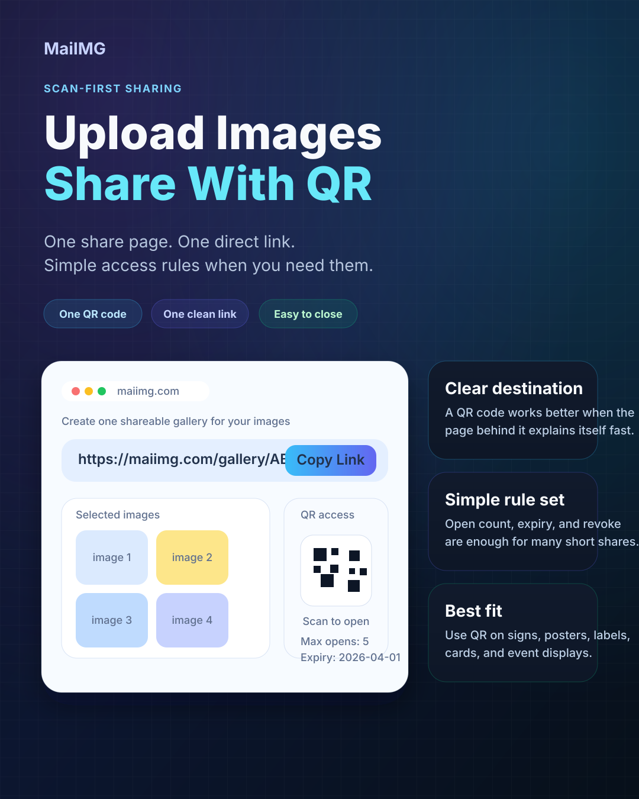

Main idea
Create the share first, then give it a scan path
The link comes first. The QR code is just another way to open the same share. Keeping that order in mind avoids a lot of confusion.

A QR code is useful when people will scan from paper, packaging, signage, or a screen. The key point is simple: the QR code should still lead to one clean image share, not to a messy pile of files.
Posters, event signs, cards, printed menus, labels, and booth displays are good examples.
The QR code should point to the same share link you would send in chat or email.
If the code will stay in a public place, set limits and expiry before it goes live.
Do not add a QR code just because you can. Add it when the audience is standing in front of something and scanning feels easier than typing or waiting for a message.
Posters, event desks, product packaging, printed cards, booth signs, and public screens.
Private chat, email, and docs often work better with the direct link instead of a QR code.
The QR code comes from the same share link. One share supports up to 25 files and can use access limits and expiry.
Posters and signs work well because people can spot the code, step closer, and scan.
Cards and labels can work too, but the destination page must be very clear because the scan happens quickly.
Always decide whether open limits or expiry should be added before the QR code is printed or displayed.
A QR code on a presentation slide or screen can work well if the share is meant for immediate action.
Tip: the visuals below can be opened in a larger view.
The link comes first. The QR code is just another way to open the same share. Keeping that order in mind avoids a lot of confusion.

What changes is the entry method. What should not change is the actual share page people reach after scanning.
If the destination page feels unfinished or overloaded, the QR code will not fix that. A clean share is what makes the scan feel useful.

That is why short labels, clear visuals, and a focused set matter so much in QR-based sharing.
Create the share first, then add the QR code only where scanning actually helps.
Try MaiIMG